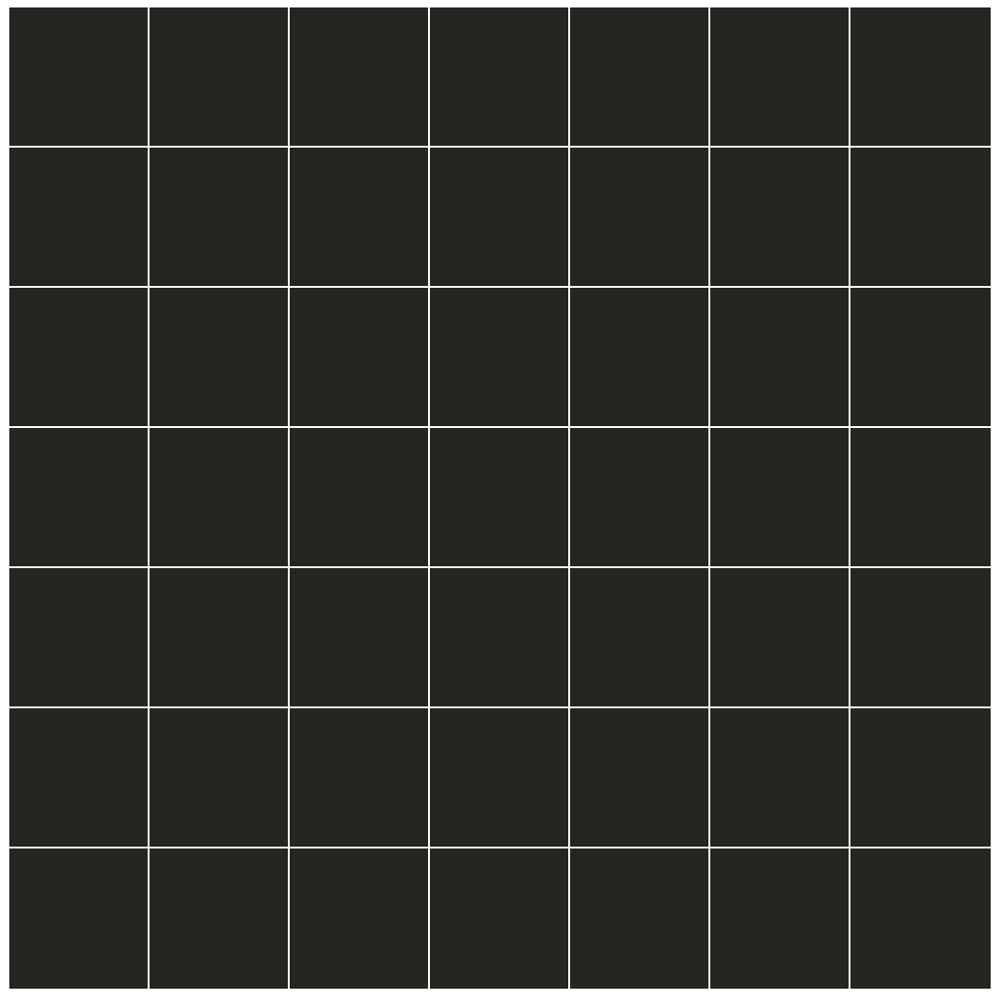

IMPORTANT! This study can ONLY run on a desktop/laptop.
In this study you will communicate with robots using symbols.
Your task is to use symbols efficiently
In the end of the session we will ask you a few unrelated demographic questions.
The study is expected to take 20 minutes
Thanks for participating!
Informed Consent
By answering the following questions, you are participating in a study performed by cognitive scientists in the MIT Department of Brain and Cognitive Science. If you have questions about this research, please contact Tomer Ullman at tomeru@mit.edu. Your participation in this research is voluntary. You may decline to answer any or all of the following questions. You may decline further participation, at any time, without adverse consequences. Your anonymity is assured; the researchers who have requested your participation will not receive any personal identifying information about you. By clicking 'I AGREE' you indicate your consent to participate in this study.
Task Description
Two robots have visited us from outer space (white robot and blue robot) and they are excited to communicate with us.
Scientists discoverd that the robots communicate by building grid-like patterns. Below are 3 of such patterns.
In this experiment, you will communicate by building these kinds of patterns on a 7x7 scratch pad.

On each coordinate of the scratch pad, you can put down an example of one of 3 symbols: pig, chicken, and pebble.
Each pig or chicken can be one of 3 colors: red, green, and blue. Pebbles are always white.
After you pick the symbol and its color, you can place it on the scratch-pad. In case you make a mistake, you can click on the example again to remove it.
Building the entire pattern at once can be tedius, as it requires 7x7=49 examples. Luckily, the robots are empathetic: They will try to guess what pattern you are trying to communicate based on the examples you've shown the scratch pad so far.
You will communicate with the robots, one at a time. With each robot, you will communicate a total of 12 patterns. Your goal is to have the robots correctly guess your pattern while using as few examples as possible.